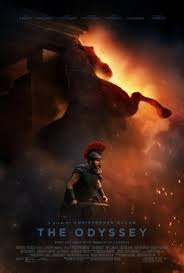

The Odyssey
Year: 2026 • Genre: Action/Fantasy
Christopher Nolan's ambitious adaptation of Homer's legendary epic delivers an incredible cinematic experience with outstanding performances, practical effects, captivating visuals, and a story that remains engaging throughout its nearly three-hour runtime.
Review
Date Watched: August 8, 2026
Where Watched: Theaters
Adaptation? Homer's Odyssey
Quick Hook (First Impression)
I have an interesting relationship with Christopher Nolan's films. I love The Dark Knight trilogy and Oppenheimer, but outside of those films, I will admit that I'm not a huge fan of his work and sometimes feel that his movies are a bit overrated. Despite the fact that I feel this way, I still looked at his new film The Odyssey and decided that whether it was good or bad, I would still get a review out of it.
After watching the film, I can say that it is not good.....it is amazing.
I'm actually going to start with the only nitpick, which is that the modern dialect did take a little bit of time to adjust to. However, after about ten minutes, it was fine and worked well with the direction of the film.
Story / Concept
The story for those who have not read the original poem by Homer speaks about Greek King Odysseus, played by Matt Damon, coming home from the Trojan War. Throughout the journey, Odysseus and his men fight against monsters and the gods, while his wife Penelope, played by Anne Hathaway, and his son Telemachus, played by Tom Holland, are dealing with suitors competing for Penelope's hand in marriage in order to claim the throne of Ithaca.
Now, I know that this adaptation does have some differences from the original source, but Christopher Nolan did a great job at making a story that was captivating from beginning to end. He kept me intrigued throughout while also keeping the pace of the film steady for an almost three-hour runtime.
Performances
The characters and casting choices did raise a lot of controversy, but the cast did an outstanding job. Matt Damon, Anne Hathaway, and Tom Holland all did a great job in their respective roles.
Robert Pattinson also stood out as the manipulative Antinous, while John Leguizamo did a great job playing Eumaeus, the blind swineherd and loyal servant to Odysseus.
The chemistry with the cast showed, and despite the arguments about certain casting choices, they all did a good job playing their respective roles.
Pacing / Flow
One of the most impressive aspects of The Odyssey is how well it handles its almost three-hour runtime. Despite running for 2 hours and 52 minutes, the film never felt like it was dragging.
Christopher Nolan did a great job maintaining a steady pace and making each part of Odysseus's journey feel important. The different locations, encounters, and challenges kept the story moving and kept me intrigued throughout the film.
Themes / Meaning
At its core, The Odyssey is about the journey home and everything Odysseus must endure along the way. The film explores perseverance, loyalty, family, and the determination to return home despite seemingly impossible obstacles.
I also enjoyed how the story balances Odysseus's journey with what is happening back in Ithaca. While Odysseus is fighting monsters and gods, Penelope and Telemachus are dealing with their own problems as they try to protect their family and the throne.
Final Thoughts
Another positive has to go to the character design, particularly with the Cyclops, Polyphemus. When I first saw the images of Polyphemus, I was a little skeptical of the design and was concerned about the movement because instead of using CGI, the film went with a more practical approach.
However, while seeing the Cyclops in motion, his movements were smooth and intimidating. The practical approach worked extremely well and made Polyphemus one of the most memorable creatures in the film.
I also want to mention the scene with Circe because that was easily my favorite section of the film, mostly because of seeing Odysseus's men being turned into pigs.
The effects of that scene were both disturbing and intriguing to watch. Seeing the men's faces stretch out and hearing the men's screams of pain as they were turned into squealing pigs made the entire sequence extremely unsettling.
I also enjoyed the shots being used whenever the film would switch settings. It did a good job showing the tone of the following scene, whether it was the bright shots of the ship sailing to the next destination or the dark and gloomy shots when the men entered Hades.
The shots did a great job showing me what to expect in the following scene as well as establishing the tone of the current scene it was displaying.
All in all, Christopher Nolan had a daunting task adapting one of the most iconic forms of literature out there in The Odyssey, and not only did he deliver, but he knocked it out of the park with this film.
Who is this for? Fans of Christopher Nolan, Greek mythology, epic adventures, fantasy, and anyone looking for a massive cinematic experience.
Who should skip it? Anyone who isn't interested in lengthy epic adventures, Greek mythology, or Christopher Nolan's filmmaking style may have a harder time getting into it.
One-Sentence Verdict: Christopher Nolan's The Odyssey is an epic, beautifully crafted, and incredibly captivating adaptation that manages to turn one of the world's most iconic stories into an unforgettable cinematic experience.
What Worked
- The captivating story and steady pacing.
- Outstanding performances from Matt Damon, Anne Hathaway, Tom Holland, Robert Pattinson, and John Leguizamo.
- The chemistry between the cast.
- The practical design and movement of Polyphemus.
- The disturbing and impressive transformation scene involving Circe and Odysseus's men.
- The cinematography and use of different lighting to establish the tone of each scene.
- Christopher Nolan's direction and adaptation of Homer's source material.
What Didn't
- The modern dialect took some time to adjust to during the beginning of the film.
Optional Gut Check
Rewatchable? Yes
Would I recommend this casually to a friend? Yes
I'd love to hear your thoughts. Agree or disagree? Email me at ross@nobodycritics.com